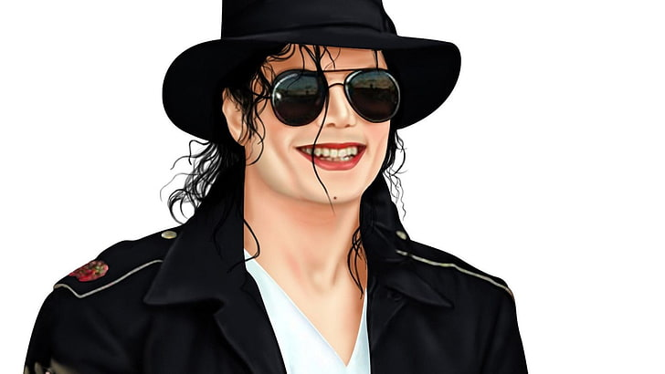

Some people want it to happen, some wish it would happen, others make it happen.

Some people want it to happen, some wish it would happen, others make it happen.
Michael Jackson, born August 29, 1958, was an American pop icon known as the "King of Pop." Rising to fame as a child with the Jackson 5, he achieved unparalleled success as a solo artist. His album "Thriller" remains the best-selling album of all time. Jackson's music and unique dance moves captivated audiences worldwide. Despite controversies, his impact on music and culture is undeniable. Jackson's philanthropy and influence extended beyond entertainment. He died on June 25, 2009, leaving a legacy that continues to inspire and influence generations of artists and fans globally.